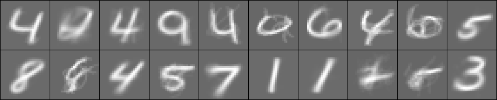
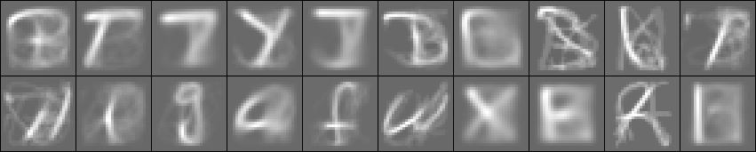
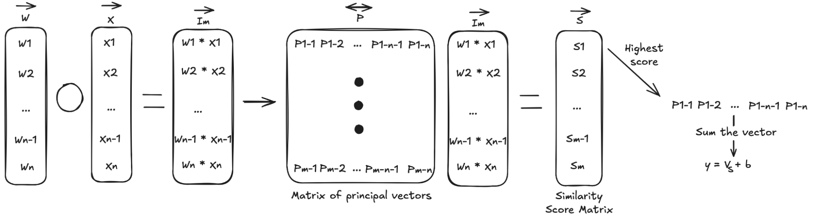

Principal vector networks: simplifying the values of neurons
When trying to determine how a neural network works internally, one of the most daunting challenges is overcoming the range of values that a neuron can have and how often it takes them. The following method aims to simplify this continuum to a few distinct activation patterns per neuron, and in the process get an idea of what these activations represent.

MNIST
EMNIST-balancedThis method derives these patterns from the training data and network and provides a drop-in for neurons in trained models. Base model test set performance is also generally preserved - with differences in performance hinging mainly on task difficulty. What follows is how the neuron simplification is done, what impacts the test set performance of the simplification and what the resulting patterns might reveal about the model's internals.
01So how does it work?
In a typical linear layer, the activation for a single neuron is \(y_{n}^{l} = \sigma\!\left(W_{n}\cdot x^{l-1} + b_{n}\right)\), where \(y_{n}^{l}\) is the scalar activation for neuron \(n\) in layer \(l\), \(\sigma\) is the activation function (ReLU, SiLU, …), \(W_{n}\) is the neuron's weight vector, \(b_{n}\) its bias, and \(x^{l-1}\) the previous layer's activations. A principal-vector neuron instead takes the Hadamard product of the weights and inputs, then compares it — by cosine similarity — against a small set of pre-computed principal vectors. The nearest one is substituted in, and the activation proceeds as normal.
To derive the vectors, a model is trained and frozen, then run over the training set again while every neuron's Hadamard product is recorded. For each neuron, those vectors are connected into a kNN graph and clustered — either into a fixed number of groups or automatically via the Louvain method — and each cluster yields one principal vector.

Note that the principal networks do take a good bit longer to run and take more space in memory, as the steps added to the per-neuron process are less parallelizable compared to the linear layer and scale in memory by both the number of neurons in the previous layer and the number of principal vector groups.
02How were these networks tested?
Each model is trained as a standard fully-connected network on MNIST or EMNIST-balanced.11Two depths are used throughout: shallow = 128 → 64 → 10/47 and deep = 128 → 128 → 64 → 64 → 10/47. Once trained, individual neurons (or whole layers) are swapped out for their principal-vector equivalent and the network is re-evaluated on the held-out test set.22Every result is averaged over seven initialization seeds — 5, 67, 1032, 1362, 2721, 3693, 5241 — which is what the error bands and bars in the figures show. The baseline is always the unmodified, all-linear network.
03How do the networks do?
As shown previously, for single-neuron principal vector substitution, performance decreases as more neurons are converted to principal vector substitutions. For patterns involving substituting all of the layers, models seem to degrade in ability when the number of classes the network needs to predict increases. Conversely, model performance seems to improve as models get both deeper. These data points seem to suggest that the principal model performance is subject to not only architecture but also the number of neurons compared to the number of predictions that the network needs to make.
For patterns involving single layer substitutions, the results are more nuanced. Models seem to be bottlenecked by principal layers, as performance does typically decrease when substituting back in principal layers. Notably, substituting in the first layer seems to have a dramatic negative impact while later layers can have less to no negative performance difference. This seems to indicate that some layers are more amenable to being represented in this way, and for the MNIST models it may be likely that this is what they are doing for the later layers in the network. Another behavior that the principal model exhibits is performance differences when varying training duration of the linear model.
It is unclear why there is a loss in performance as the models are trained for longer. This seems to corroborate findings that as a model is trained for longer it tends to drop the use of pattern matching to solve tasks. Likewise, it seems to imply that the principal vector representation captures some of the early stage memorization that the model does. It also seems to be the case that across the board optimization pressures do not fine tune for pattern matching. The one last thing that can be fine tuned though is the number of groups in a principal vector model.
Interestingly, the number of groups needed for better performance on EMNIST-balanced seems to go beyond what MNIST saturates at - as seen by performance increasing up to 100 groups - although this does not get EMNIST-balanced test accuracy to parity with the MNIST based principal networks. The emergence of layer norm as the most performant architecture is also interesting as this does not emerge until a larger number of groups are picked, as well as only on the MNIST model. However, the higher number of groups does not reverse the trend of performance decreasing with epochs. More work would need to be done to get a better idea of what is lost, what the accuracy is traded for and why this trade occurs as models are trained for longer.
04Closing thoughts
Looking at the data suggests that principal vectors are a good way of simplifying the choices that a model can make for a given neuron without substantially diminishing the performance of a network. It is unclear how much interpretability beyond this simplification of activations and their representations that principal vectors give, as it is hard to determine what the principal vectors for layers beyond the first layer represent. Because all of the input activations for the layer can be reconstructed from a principal vector, it is trivial to reconstruct what the first layer’s principal vectors represent - this is typically a number/letter with a particular feature or rarely an amalgamation of numbers and letters. For layers further into the network, it becomes less clear what the principal vectors represent due to matrices having a many-to-one mapping; there are many inputs that could theoretically give a valid input to the layer that the principal vector can reconstruct. More work would need to be done to see how much the network uses the null space and the zeroed out space given by the activation to do many-to-one mappings. Likewise, being able to reconstruct the valid space of input vectors for a given layer could also help determine what is a valid input that might have produced a principal vector and what might not have been, allowing for reconstructing the patterns that principal vectors in later layers of the network are representing.
Overall, being able to simplify the network activations may be promising for getting an idea of how the model works through the pattern matching method that principal vector networks illustrate as well as potentially pointing to where the algorithmic parts of the network may reside in the gap between the linear layer network and the principal network.
Thanks for reading this far and if you have any comments or critiques, feel free to reach out at keeganfreyhof@gmail.com.